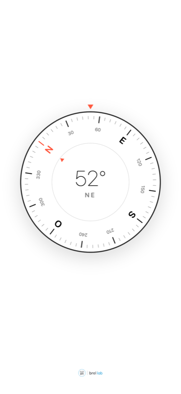

Brúixola
La teva brúixola, simple i precisa.

Què ofereix
- Rumb en graus i punt cardinal en temps real.
- Dial de línies fines que gira suaument amb el teu moviment.
- Nord veritable quan hi ha ubicació disponible; si no, nord magnètic.
- Funciona en vertical i en horitzontal, a iPhone i iPad.
- Sense comptes, sense anuncis i sense recollida de dades.
Tens dubtes o suggeriments? Visita la pàgina de suport.